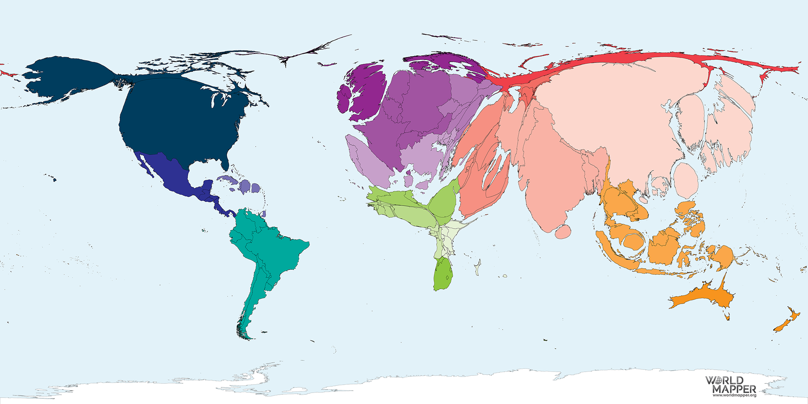

A note on Macroeconomic Modelling
Why do we need macroeconomic models?
Economic models are a representation of reality. To understand observed trends in the economy - such as financial crisis, how income grows, why people are unemployed or why prices are rising, we need to abstract a number of elements and focus on others. What to neglect and what to consider is a crucial part of building economic models. The more elements (or endogenous variables) a model incorporates, the harder it is to see the model's insights. On the other hand, the less variables you employ, the more insightful the model is, albeit more information you loose.
For this reason, we share the view of George E. P. Box that "All models are wrong, but some are useful".Economic models have different purposes. One of them is designing economic policies. Given that economic models are often a mathematical framework, they can provide numerical estimates of policy options. And often they are used by government departments, such as Central Banks, to base policy-decisions. For their aggregated nature, policy design is mostly done through macroeconomic models. Some real-world problems, however, are often neglected by standard economic theory, which is known as neoclassical economics.
One such problem is the role of finance in economic dynamics. Financial markets include various agents and instruments. In addition to the stock market, credit creation by banks, the issuance of bonds by the national treasury and even interest bearing deposits are part of the financial system. Nevertheless, most of these elements are largely absent in neoclassical macroeconomic modelling. But is money, or any other financial instrument, irrelevant for understanding economic dynamics?
By retrieving data from the Harvard Business School (available here). I have calculated the number of banking crisis, by year, since 1800:We can see that banking crises have been a common element of the economic system at least since the 19th century. Moreover, we can see a significant increase in their frequency during the last 40 years. In 2008, for instance, we could see the perverse effect of a serious financial crisis, of international scale, whose effects on the economic activity were felt for years. So why "No one saw this coming"? There were three main reactions for the 2008 crisis: a) the "fresh-water" view that that the crisis was led by misguided policy and bad regulation by the government. b) the view that economic theory needed adjustments in order to include financial markets.
This was the most common reaction within the economcis profession. And finally, there was the "heterodox" reaction, which understand that ecoonomic regulation and policies are guided by flawled economic theories. I endorse the third view, and will illustrate why. The workhorse of current neoclassical macroeconomics are DSGE models. In this framework, events such as economic crisis, when not ruled out by construction, are exogenous shocks, and not breeded withing the economic system. Albeit seemingly sophisticated, DSGE models could not foresee the 2008 crisis, I argue, due to the lack of a proper integration of finance into economic modelling.The Nobel prize laureate Paul Romer for instance, has been a vocal critic of the current state of modern neoclassical macroeconomics. The author cites as an example the following quote from a renowned colleague to highlight one of the key drawbacks of this theoretical approach: "although in the interest of disclosure, I must admit that I am myself less than totally convinced of the importance of money outside the case of large inflations".
Surprisingly this drawback of standard neoclassical modelling, was only recognised after the 2008 great financial crisis by neoclassical economists. Joseph Stiglitz said: the following about DSGE models: "Dynamic Stochastic General Equilibrium (DSGE) models, which have played such an important role in modern discussions of macroeconomics, in my judgement fail to serve the functions which a well-designed macroeconomic model should perform."
But the increasing frequency of financial crises is not the only argument in favour of modelling more realistic, non-perfect financial markets within economic theory. Modern economies are greatly influenced by endogenous monetary components, such as credit cycles, equities, housing and even commodity price fluctuations - all of which are integral parts of the financial system.
In order to illustrate how the "real" economy and the financial economy have strong co-movements, I have calculated a financial composite index, which is a simple average of shares, residential and commodities' prices (All of them available in the St. Luis Fed website). Then, I have contrasted this composite with the industrial production in the US from 1992 until today.
The results are illustrated below:
It is possible to see a strong correlation between the two series both in upward and downward economic cycles. Although not conclusive, this figure exemplifies the potential drawback of omitting the real-financial nexus on macroeconomic modelling.
The positive association between the series is also clear by plotting their growth rates for the same period:
Another important source of imbalances in the real economy comes from credit. Credit cycles, which are typically fuelled by rising asset prices, play an important role in determining investment levels. Unlike most DSGE models, however, credit - and other external financing instruments - can be issued independently of available financing (e.g. deposits).
In other words, financing is created endogenously by the financial system. This has a double implication for the economic system. At the same time that agents can borrow more than they can pay back, banks can lend beyond the safe level - as we saw in 2008. That is, financial imbalances are created within the economic system, are frequent, and are related to the real economic activity.
This can be further illustrated by comparing nonfinancial corporations' debt (securities + loans) to GDP performance. This was done for the US between 1960-2020, and is illustrated below:
Two results are worth noting. First, debt and investments show strong comovement. That is, production depends on debt. Second, it is possible to see that high debt growth usually precedes economic recessions.
This pattern was observed in most US recessions since the 1960s, 2008 being a remarkable example of this leveraging process.
The relation between indebtedness and GDP dynamics can also be framed by the sectoral net lending - which represents its borrowing (-) or lending (+) position in each year. Normally, high-growth periods are associated with higher leveraging periods (increasing borrowing needs). Below, I've plotted the change in private business sector net lending positions and GDP growth rates for the US to illustrate this macroeconomic feature:
We can see a clear association between the private sector financial needs (increasing borrowing) and GDP growth.
This negative relation is corroborated by comparing the correlation between GDP and the net lending position of households (NL_HH and NLa_HH), and business (NL_PVT, NLa_PVT), as we can see below:
We can see that, as expected, the more households, and to a lesser extent the whole private sector, borrow (- sign) in relation to its income, the higher are the economic growth rates. That's why we see a negative correlation between the two series.
This illustrates, again, that funding needs and GDP dynamics have a strong and structural relation. As a result, omitting financial markets from macroeconomic analysis is fundamentally flawed. And it is particularly surprising that money and finance - seemingly obvious components of the economic system - have been overlooked for so long in macroeconomic modelling.
Although this seemingly important gap in neoclassical macroeconomic analysis is being amended by the more recent literature, a robust and long-lasting theoretical framework had already framed the role of money in the economic system through alternative lenses.
Among the alternatives to incorporate financial aspects into macroeconomic analysis, we highlight the post-Keynesian approach. One of the key aspects of post-Keynesian economics is the key role played by financial markets, and the role played by money itself. (If you are curious about this research agenda, I encourage you to visit this website, or to watch this talk from Marc Lavoie.)
Some fundamental aspects of this approach, alongside illustrative data, will be addressed in the next post.